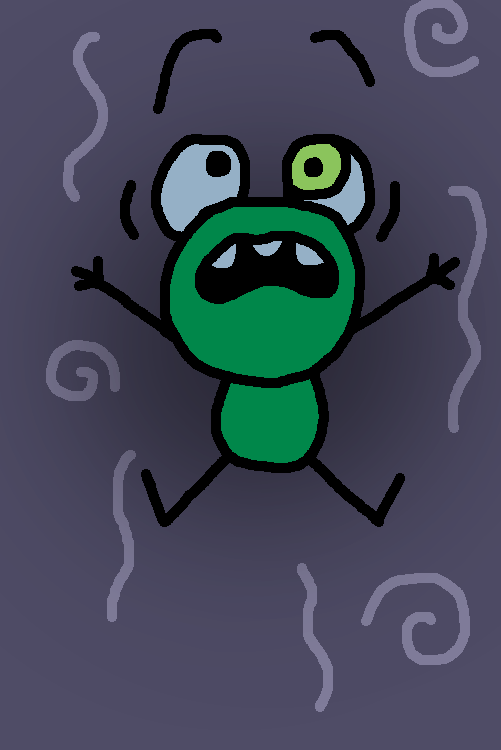
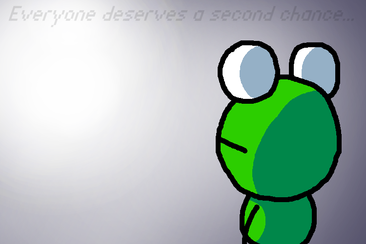

Page 6
Nadeem hopped down from the fighter jet, but couldn’t see Kervin anywhere. It was quiet.. too quiet. Nadeem took a tour around his home in shambles. Family photos were shattered, valuables were knocked off shelves, some items even reduced to a molecular state. Nadeem was sad, but he didn’t really care all that much. Nadeem had the credit card! This was all that Nadeem needed to fix up his home. The limit was near infinite. Nadeem’s whole life had crumbled around him, and yet he was content.
Kervin awoke, it was a strange place. Was this the afterlife? He looked around. He saw faint visions of fond memories in his life flashing around him. Aside from this, it was dark and sort of foggy. He couldn’t tell whether there was a floor below him or nothing. “H-hello?” Kervin called out. No answer.
As Kervin stepped forward, he saw the light returning, and heard a faint voice. He continued his walk. The vicinity got lighter and lighter as with every step. The voice eventually reached a point where he could understand its words. The voice stated, “Everyone deserves a second chance.” Kervin didn’t understand. Was he possibly getting a second chance at life? Finally he reached a point where it was so bright that he couldn’t even see himself. The voice now said, “One final step forward and you will be granted access to the afterlife, or, if you might have any unfinished business, you may return to your life.”
Kervin saw an opportunity in this. He had never gotten a chance to say goodbye to his friends. At this point he no longer cared about his stolen belongings. He simply wanted to wish those he cared about one final goodbye. Kervin stood there for a moment, and he turned around.
When he looked back everything went dark. This startled Kervin. He looked back toward the light for a moment, and started back to his life. He saw the visions from before. They grew more visible as he moved in the opposite direction from beforehand. One final step, and he would finish his life the way that he wanted to. “Don’t mess up, this is the last chance you’ll get.”